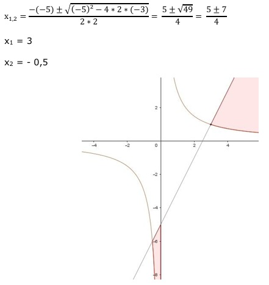
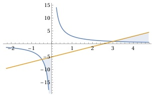

Aufgabe 57 Bestimmen Sie die Lösungsmenge der Ungleichung für x ∈ ℝ: 3 --- < 2x - 5 x ≠ 0 x 3 --- < 2x - 5 |*x x 3 < 2x² - 5x |-3 2x² - 5x - 3 > 0 Nullstellen von 2x² - 5x - 3 = 0 A, B, C - Formel: A = 2, B = - 5, C = -3

Die Funktionswerte zwischen -0,5 und 0 und ab x = 3 liegen unterhalb der Geraden 2x – 5, erfüllen also 3 die Bedingung --- < 2x + 5. x L = -0,5 < x < 0 ∪ x > 3 Alternativlösung: 3 --- < 2x - 5 x 3 --- < 2x - 5 |-2x + 5 x 3 --- - 2x + 5 < 0 x 3 - 2x² + 5x ------------- < 0 |*(-1) x 2x² - 5x - 3 ------------- > 0 |:2 x x² - 2,5x - 1,5 ---------------- < 0 x (x - 3)(x + 0,5) ---------------- > 0 ist dann der Fall, wenn x (x - 3)(x + 0,5) > 0 und x > 0 (x - 3)(x + 0,5) > 0 ist dann der Fall, wenn 1. x - 3 > 0 für x > 3 und x + 0,5 > 0 für x > -0,5 (x - 3)(x + 0,5) > 0 trifft zu für x > 3 ∩ x > -0,5 = x > 3 (x - 3)(x + 0,5) ---------------- > 0 trifft zu für x L1 = x > 0 ∩ x > 3 = x > 3 oder wenn 2. (x - 3)(x + 0,5) < 0 und x < 0 (x - 3)(x + 0,5) < 0, ist dann der Fall, wenn (x- 3) > 0 und (x + 0,5) < 0 x - 3 > 0 --> x > 3 und x + 0,5 < 0 --> x < -0,5 (x - 3)(x + 0,5) < 0 trifft zu für x > 3 ∩ x < -0,5 = Φ oder x - 3 < 0 --> x < 3 und x + 0,5 > 0 --> x > -0,5 (x - 3)(x + 0,5) < 0 trifft zu für Φ ∪ -0,5 < x < 3 = -0,5 < x < 3 (x - 3)(x + 0,5) ---------------- > 0 trifft zu für x L2 = x < 0 ∩ -0,5 < x < 3 = -0,5 < x < 0 L = L1 ∪ L2 = x > 3 ∪ -0,5 < x < 0 L = -0,5 < x < 0 ∪ x > 3